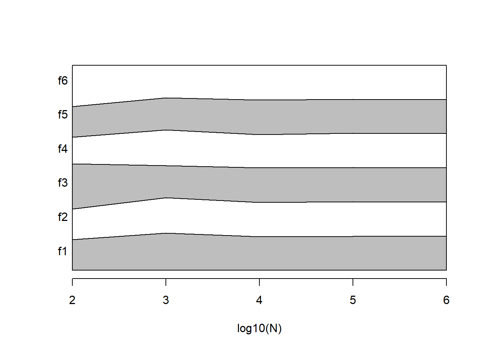
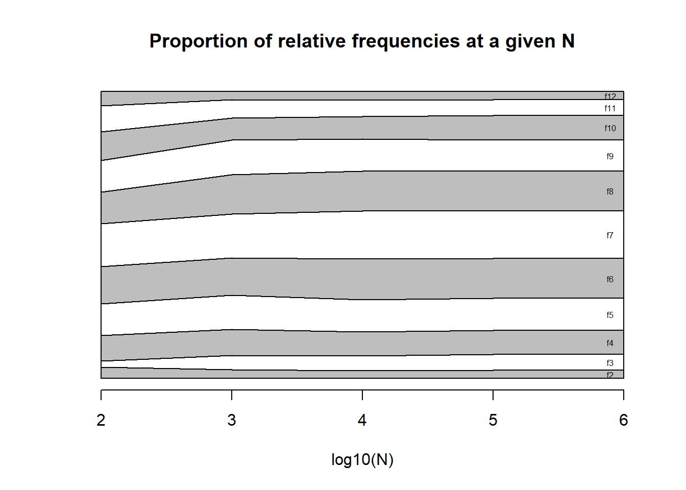

Chapter 3 Probability
3.2 Random experiments
Observation
- An observation is the acquisition of a number or a characteristic from an experiment
Outcome
- An outcome is a possible observation that is the result of an experiment.
Random experiment
- An experiment that gives different outcomes when repeated in the same manner.
3.3 Probability
The probability of an outcome is a measure of how sure we are to observe that outcome when performing a random experiment.
0: We are sure that the observation will not happen.
1: We are sure that the observation will happen.
3.4 Example
- Consider the following observations of a random experiment:
1 5 1 2 2 1 2 2
- How sure we are to obtain \(2\) in the following observation?
3.5 Example
The frequency table is
## outcome ni fi
## 1 1 3 0.375
## 2 2 4 0.500
## 3 5 1 0.125The relative frequency \(f_i\)
- is a number between \(0\) and \(1\).
- measures the proportion of total observations that we observed a particular outcome.
- seems a reasonable probability measure.
As \(f_2=0.5\) then we would be half certain to obtain a \(2\) in the next repetition of the experiment.
3.6 Relative frequency
As a measure of certainty is \(f_i\) enough?
Say we repeated the experiment 12 times more:
1 5 1 2 2 1 2 2 3 1 1 3 3 1 6 3 5 6 4 4
The frequency table is now
## outcome ni fi
## 1 1 6 0.3
## 2 2 4 0.2
## 3 3 4 0.2
## 4 4 2 0.1
## 5 5 2 0.1
## 6 6 2 0.1New outcomes appeared and \(f_2\) is now \(0.2\), we are now a fifth certain of obtaining \(2\) in the next experiment… probability should not depend on \(N\)
3.7 At infinity
Say we repeated the experiment 1000 times:
## outcome ni fi
## 1 1 168 0.168
## 2 2 151 0.151
## 3 3 178 0.178
## 4 4 164 0.164
## 5 5 180 0.180
## 6 6 159 0.159We find that \(f_i\) is converging to a constant value
\[lim_{N\rightarrow \infty} f_i = P_i\]

3.8 Frequentist probability
We call Probability \(P_i\) to the limit when \(N \rightarrow \infty\) of the relative frequency of observing the outcome \(i\) in a random experiment.
Championed by Venn (1876)
The frequentist interpretation of probabilities is derived from data/experience (empirical).
- We do not observe \(P_i\), we observe \(f_i\)
- When we estimate \(P_i\) with \(f_i\) (typically when \(N\) is large), we write: \[\hat{P_i}=f_i\]
3.9 Classical Probability
Whenever a random experiment has \(M\) possible outcomes that are all equally likely, the probability of each outcome is \(\frac{1}{M}\).
Championed by Laplace (1814).
Since each outcome is equally probable we declare complete ignorance and the best we can do is to fairly distribute the same probability to each outcome.
What if I told you that our experiment was the throw of the dice? then
\(P_2=1/6=0.166666\).
\[P_i=lim_{N\rightarrow \infty} \frac{n_i}{N}=\frac{1}{M}\]

3.11 Probability
Probability is a number between \(0\) and \(1\) that is assigned to each member \(E\) of a collection of events of a sample space (\(S\)) from a random experiment.
\[P(E) \in (0,1)\]
where \(E \in S\)
3.12 Sample space
We start by reasoning what are all the possible values (outcomes) that a random experiment could give.
Note that we do not have to observe them in a particular experiment: We are using reason/logic and not observation.
Definition:
The set of all possible outcomes of a random experiment is called the sample space of the experiment.
The sample space is denoted as \(S\).
3.13 Examples of sample spaces
- temperature 35 and 42 degrees Celcius
- sugar levels: 70-80mg/dL
- the size of one screw from a production line: 70mm-72mm
- number of emails received in an hour: 0-100
- a dice throw: 1, 2, 3, 4, 5, 6
3.14 Discrete and continuous sample spaces
A sample space is discrete if it consists of a finite or countable infinite set of outcomes.
A sample space is continuous if it contains an interval (either finite or infinite in length) of real numbers.
3.15 Event
Definition:
An event is a subset of the sample space of a random experiment. It is a collection of outcomes.
Examples of events:
- The event of a healthy temperature: temperature 37-38 degrees Celsius
- The event of producing a screw with a size: of 71.5mm
- The event of receiving more than 4 emails in an hour.
- The event of obtaining a number less than 3 in the throw of a dice
One event refers to a possible set of outcomes.
3.16 Event operations
For two events \(A\) and \(B\), we can construct the following derived events:
- Complement \(A'\): the event of not \(A\)
- Union \(A \cup B\): the event of \(A\) or \(B\)
- Intersection \(A \cap B\): the event of \(A\) and \(B\)
3.17 Event operations example
Take
- Event \(A:\{1,2,3\}\) a number less or equal to three in the throw of a dice
- Event \(B:\{2,4,6\}\) an even number in the throw of a dice
New events:
- Not less than three: \(A':\{4,5,6\}\)
- Less or equal to three or even: \(A \cup B: \{1,2,3,4,6\}\)
- Less or equal to three and even \(A \cap B: \{2\}\)
3.18 Outcomes
Outcomes are events that are mutually exclusive
Definition:
Two events denoted as \(E_1\) and \(E_2\), such that
\[E_1\cap E_2=\emptyset\] They cannot occur at the same time.
Example:
The outcome of obtaining \(1\) and the outcome of obtaining \(5\) in the throw of one dice are mutually exclusive:
The event of obtaining \(1\) and \(5\) is empty:\[\{1\}\cap \{5\}=\emptyset\]
3.19 Probability definition
A probability is a number that is assigned to each possible event (\(E\)) of a sample space (\(S\)) of a random experiment that satisfies the following properties:
- \(P(S)=1\)
- \(0 \leq P(E) \leq 1\)
- when \(E_1\cap E_2=\emptyset\) \[P(E_1\cup E_2) = P(E_1) + P(E_2)\]
Proposed by Kolmogorov’s (1933)
3.20 Probability properties
Kolmogorov says that we can build a probability table (likewise the relative frequency table)
| outcome | Probability |
|---|---|
| \(1\) | 1/6 |
| \(2\) | 1/6 |
| \(3\) | 1/6 |
| \(4\) | 1/6 |
| \(5\) | 1/6 |
| \(6\) | 1/6 |
| \(P(1 \cup 2\cup ... \cup 6)\) | 1 |
As \(\{1,2,3,4,5,6\}\) are mutually exclusive then
\[P(S)=P(1\cup 2\cup ... \cup 6) = P(1)+P(2)+ ...+P(n)=1\]
3.21 Addition Rule
When \(A\) and \(B\) are not mutually exclusive then:
\[P(A \cup B)=P(A) + P(B) - P(A\cap B)\]
Where \(P(A)\) and \(P(B)\) are called the marginal probabilities
3.22 Example Addition Rule
Take
- Event \(A:\{1,2,3\}\) a number less or equal to three in the throw of a dice
- Event \(B:\{2,4,6\}\) an even number in the throw of a dice
then:
- \(P(A): P(1) + P(2) + P(3)=3/6\)
- \(P(B): P(2) + P(4) + P(6)=3/6\)
- \(P(A \cap B): P(2) = 1/6\)
\(P(A \cup B)=P(A) + P(B) - P(A\cap B)=3/6+3/6-1/6=5/6\)
Note: \(P(2)\) appears in \(P(A)\) and \(P(B)\) that’s why we subtract it with the intersection
3.23 Venn diagram
Note that can always break down the sample space in mutually exclusive sets involving the intersections:
\(S=\{A\cap B, A \cap B', A'\cap B, A'\cap B'\}\)

Marginals:
- \(P(A)=P(A\cap B') + P(A \cap B)=2/6+1/6=3/6\)
- \(P(B)=P(A'\cap B) +P(A \cap B)=2/6+1/6=3/6\)
3.24 Probability table
Let’s look at the probability table
| outcome | Probability |
|---|---|
| \(A\cap B\) | \(P(A\cap B)\) |
| \(A\cap B'\) | \(P(A\cap B')\) |
| \(A'\cap B\) | \(P(A'\cap B)\) |
| \(A'\cap B'\) | \(P(A'\cap B')\) |
| sum | \(1\) |
3.25 Example probability table
We also write \(A \cap B\) as \((A,B)\) and call it the joint probability of \(A\) and \(B\)
In our example:
| outcome | Probability |
|---|---|
| \((A, B)\) | \(P(A, B)=1/6\) |
| \((A, B')\) | \(P(A, B')=2/6\) |
| \((A', B)\) | \(P(A', B)=2/6\) |
| \((A', B')\) | \(P(A', B')=1/6\) |
| sum | \(1\) |
Note: each outcome has \(two\) values (one for the characteristic of type \(A\) and another for type \(B\))
3.26 Contingency table
We can organize the probability of joint outcomes in a contingency table
| \(B\) | \(B'\) | sum | |
|---|---|---|---|
| \(A\) | \(P(A, B )\) | \(P(A, B' )\) | \(P(A)\) |
| \(A'\) | \(P(A', B )\) | \(P(A', B' )\) | \(P(A')\) |
| sum | \(P(B)\) | \(P(B')\) | 1 |
Marginals:
- \(P(A)=P(A, B') + P(A, B)\)
- \(P(B)=P(A', B) +P(A, B)\)
3.27 Example contingency table
- Event \(A:\{1,2,3\}\) a number less or equal to three in the throw of a dice
- Event \(B:\{2,4,6\}\) an even number in the throw of a dice
| \(B\) | \(B'\) | sum | |
|---|---|---|---|
| \(A\) | \(1/6\) | \(2/6\) | \(3/6\) |
| \(A'\) | \(2/6\) | \(1/6\) | \(3/6\) |
| sum | \(3/6\) | \(3/6\) | 1 |
Three forms of the addition rule:
\(P(A \cup B)\)\[=P(A) + P(B) - P(A\cap B)\] \[=P(A \cap B)+P(A\cap B')+P(A'\cap B)\] \[=1-P(A'\cap B')\]
3.28 Misophonia study
In the misophonia study, the patients were assessed for their misophonia severity and if they were depressed.
The outcome of one random experiment is to measure the misophonia severity and depression status of one patient. The repetition of the random experiment was to perform the same two measurements on another patient.
## Misofonia.dic depresion.dic
## 1 4 1
## 2 2 0
## 3 0 0
## 4 3 0
## 5 0 0
## 6 0 0
## 7 2 0
## 8 3 0
## 9 0 1
## 10 3 0
## 11 0 0
## 12 2 0
## 13 2 1
## 14 0 0
## 15 2 0
## 16 0 0
## 17 0 0
## 18 3 0
## 19 3 0
## 20 0 0
## 21 3 0
## 22 3 0
## 23 2 0
## 24 0 0
## 25 0 0
## 26 0 0
## 27 4 1
## 28 2 0
## 29 2 0
## 30 0 0
## 31 2 0
## 32 0 0
## 33 0 0
## 34 0 0
## 35 3 0
## 36 0 0
## 37 2 0
## 38 3 1
## 39 2 0
## 40 2 0
## 41 0 0
## 42 2 0
## 43 3 0
## 44 0 0
## 45 0 0
## 46 2 0
## 47 2 0
## 48 3 0
## 49 3 0
## 50 0 0
## 51 0 0
## 52 4 1
## 53 3 0
## 54 3 1
## 55 2 1
## 56 0 1
## 57 2 0
## 58 0 0
## 59 0 0
## 60 0 0
## 61 2 0
## 62 2 0
## 63 0 0
## 64 0 0
## 65 2 0
## 66 3 1
## 67 0 0
## 68 1 0
## 69 3 0
## 70 2 0
## 71 4 1
## 72 3 0
## 73 2 1
## 74 3 0
## 75 0 1
## 76 2 0
## 77 3 0
## 78 2 0
## 79 4 1
## 80 1 0
## 81 2 0
## 82 0 0
## 83 2 0
## 84 0 0
## 85 2 0
## 86 0 1
## 87 2 0
## 88 2 0
## 89 4 1
## 90 3 0
## 91 0 1
## 92 3 0
## 93 0 0
## 94 0 0
## 95 0 0
## 96 2 0
## 97 2 0
## 98 1 0
## 99 3 0
## 100 0 0
## 101 0 0
## 102 3 1
## 103 2 0
## 104 1 0
## 105 3 0
## 106 0 0
## 107 4 1
## 108 4 1
## 109 2 0
## 110 3 0
## 111 3 0
## 112 3 1
## 113 0 0
## 114 3 0
## 115 2 0
## 116 1 0
## 117 2 0
## 118 3 1
## 119 3 0
## 120 4 1
## 121 2 0
## 122 3 0
## 123 2 03.29 Contingency table for frequencies
- For the number of observations \(n_{i,j}\) of each outcome \((x_i, y_i)\), misophonia: \(x\in \{0,1,2,3,4\}\) and depression \(y\in \{0,1\}\) (no:\(0\), yes:\(1\))
##
## Depression:0 Depression:1
## Misophonia:4 0 9
## Misophonia:3 25 6
## Misophonia:2 34 3
## Misophonia:1 5 0
## Misophonia:0 36 5- For the relative frequencies \(f_{i,j}\)
##
## Depression:0 Depression:1
## Misophonia:4 0.00000000 0.07317073
## Misophonia:3 0.20325203 0.04878049
## Misophonia:2 0.27642276 0.02439024
## Misophonia:1 0.04065041 0.00000000
## Misophonia:0 0.29268293 0.04065041
3.31 Continous variables
In the misophonia study, the jaw protrusion was also measured as a possible cephalometric factor for de disease.
## Angulo_convexidad protusion.mandibular
## 1 7.97 13.00
## 2 18.23 -5.00
## 3 12.27 11.50
## 4 7.81 16.80
## 5 9.81 33.00
## 6 13.50 2.00
## 7 19.30 -3.90
## 8 7.70 16.80
## 9 12.30 8.00
## 10 7.90 28.80
## 11 12.60 3.00
## 12 19.00 -7.90
## 13 7.27 28.30
## 14 14.00 4.00
## 15 5.40 22.20
## 16 8.00 0.00
## 17 11.20 15.00
## 18 7.75 17.00
## 19 7.94 49.00
## 20 16.69 5.00
## 21 7.62 42.00
## 22 7.02 28.00
## 23 7.00 9.40
## 24 19.20 -13.20
## 25 7.96 23.00
## 26 14.70 2.30
## 27 7.24 25.00
## 28 7.80 4.90
## 29 7.90 92.00
## 30 4.70 6.00
## 31 4.40 17.00
## 32 14.00 3.30
## 33 14.40 10.30
## 34 16.00 6.30
## 35 1.40 19.50
## 36 9.76 22.00
## 37 7.90 5.00
## 38 7.90 78.00
## 39 7.40 9.30
## 40 6.30 50.60
## 41 7.76 18.00
## 42 7.30 18.00
## 43 7.00 10.00
## 44 11.23 4.00
## 45 16.00 13.30
## 46 7.90 48.00
## 47 7.29 23.50
## 48 6.91 37.60
## 49 7.10 15.00
## 50 13.40 5.10
## 51 11.60 -2.20
## 52 -1.00 32.00
## 53 6.00 25.00
## 54 7.82 24.00
## 55 4.80 33.60
## 56 11.00 3.30
## 57 9.00 31.50
## 58 11.50 12.80
## 59 16.00 3.00
## 60 15.00 6.00
## 61 1.40 21.40
## 62 16.80 -10.00
## 63 7.70 19.00
## 64 16.14 32.00
## 65 7.12 15.00
## 66 -1.00 10.00
## 67 17.00 -16.90
## 68 9.26 2.00
## 69 18.70 -10.10
## 70 3.40 12.20
## 71 21.30 -11.00
## 72 7.50 5.20
## 73 6.03 16.00
## 74 7.50 5.80
## 75 19.00 5.20
## 76 19.01 13.00
## 77 8.10 13.60
## 78 7.80 16.10
## 79 6.10 33.20
## 80 15.26 4.00
## 81 7.95 12.00
## 82 18.00 -1.50
## 83 4.60 18.30
## 84 15.00 3.00
## 85 7.50 15.80
## 86 8.00 27.10
## 87 16.80 -10.00
## 88 8.54 25.00
## 89 7.00 27.10
## 90 18.30 -8.00
## 91 7.80 12.00
## 92 16.00 -8.00
## 93 14.00 23.00
## 94 12.30 5.00
## 95 11.40 1.00
## 96 8.50 18.90
## 97 7.00 15.00
## 98 7.96 22.00
## 99 17.60 -3.50
## 100 10.00 20.00
## 101 3.50 12.20
## 102 6.70 14.70
## 103 17.00 -5.00
## 104 20.26 -4.15
## 105 6.64 11.00
## 106 1.80 -4.00
## 107 7.02 25.00
## 108 2.46 35.00
## 109 19.00 -5.00
## 110 17.86 -30.00
## 111 6.10 12.20
## 112 6.64 19.00
## 113 12.00 1.60
## 114 6.60 20.00
## 115 8.70 17.10
## 116 14.05 24.00
## 117 7.20 7.10
## 118 19.70 -11.00
## 119 7.70 21.30
## 120 6.02 5.00
## 121 2.50 12.90
## 122 19.00 5.90
## 123 6.80 5.803.32 Heat map for continuous variables
Two dimensional histogram.
It illustrates the “continuous contingency” table for continuous variables

3.33 Scatter plot
The histogram depends on the size of the bin (pixel).
If the pixel is small enough to contain a single observation then the heat map results in a scatter plot
The scatter plot is the illustration of a “contingency table” for continuous variables when the bin (pixel) is small enough to contain one single observation (consisting of a pair of values).